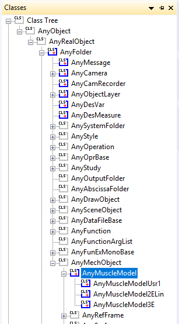
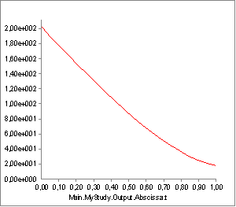

Lesson 6: Composite Recruitment Criteria¶
Caution
Old tutorial: This tutorial has not yet been updated to ver. 7 of the AnyBody Modeling System. Some concepts may have changed.
So far we have investigated recruitment criteria in the form of polynomial sums with degrees ranging from 1 (linear recruitment) to infinity (min/max recruitment). It is not given, however, that any single degree criterion is the right one.
It seems reasonable that a high order criterion is correct when the external load approaches the limit of the organism’s strength because that enables the organism to use its full strength. On the other hand, it might also be unreasonable that a lot of muscles should be activated if the external load is very small and/or some of the muscles have a very unfavorable moment arm and therefore can contribute very little.
Praagman et al (2003, 2006) reviewed the physiological mechanisms behind muscle contraction and concluded that there are two energy-consuming processes, namely detachment of cross bridges and re-uptake of calcium. If muscle recruitment is based on minimization of energy, then it is reasonable to think that the objective function contains a contribution from both these processes and they turn out to be represented by an objective function with a linear as well as a quadratic term. To investigate this, let us change the muscle recruitment to the type of quadratic criterion that also accepts a linear term:
// The study: Operations to be performed on the model
AnyBodyStudy Study = {
AnyFolder &Model = .Model;
Gravity = {0.0, -9.81, 0.0};
tEnd = Main.BikeParameters.T;
nStep = 100;
InverseDynamics.Criterion = {
Type = MR_QuadraticAux;
AuxLinearTerm.Weight = 0.0;
};
};
…and let us also reduce the power consumption to a level that does not require upper limits on the muscle activation:
// Kinematic parameters
AnyVar Cadence = 60.0; //Cadence in RPM
AnyVar MechOutput = 250; //Average Mechanical output over a cycle in Watt
Loading and running this version will produce the exact same result as the standard quadratic criterion because the weight on the linear term is set to zero. The result looks like this:

However, if we add a bit of weight to the linear term:
InverseDynamics.Criterion = {
Type = MR_QuadraticAux;
AuxLinearTerm.Weight = 0.1;
};
…we can influence the resulting recruitment and get the following result:

The muscle synergy is slightly reduced by the linear term in the objective function, and the maximum muscle activation is consequently slightly higher. Is this better than the pure quadratic recruitment? That is difficult to answer, but the option allows a discerning user to influence the recruitment criterion and to build in physiological considerations such as those by Praagman et al.
The min/max muscle recruitment has a similar alternative form that allows for the addition of a linear or quadratic term to the objective function. In this case the quadratic term turns out to be the more interesting, and it does in fact allow for a recruitment behavior that combines some of the good features of quadratic and min/max recruitments. To investigate this in more detail, let us first take a look at the optimization problem that is solved in the min/max muscle recruitment problem. We mentioned before that min/max can be interpreted as a polynomial criterion for which the power is going to infinity. Obviously, the solution of an infinity-powered objective function requires some additional mathematical tricks. The trick is to redefine the muscle recruitment problem to the following form:
Minimize
Subject to
It is easy to see why this minimizes the maximum muscle activity: The only way to reduce the objective function, \(\beta\), and to honor the constraints is to simultaneously reduce all the muscle activities. The question now is: what happens if we add a quadratic auxiliary term to the objective function, \(\beta\), this way:
Minimize
Subject to
where \(\varepsilon\) is the weight we use to tune the influence of the quadratic term.
We can do this in AnyBody by choosing the auxiliary form of the min/max recruitment criterion:
AnyBodyStudy Study = {
InverseDynamics.Criterion = {
Type = MR_MinMaxAux;
AuxQuadraticTerm.Weight = 1;
};
Reloading and rerunning produces the following rather attractive result:

This appears to produce a combination of soft onset and offset of muscles together with a clearly defined envelope on which several muscles cooperate evenly to carry the load. Please notice, however, that the effect of the Weight property, i.e. the \(\varepsilon\) in the objective function, is somewhat problem dependent because the size of the sum that it multiplies depends on the number of muscles in the system while the size of the \(\beta\) variable remains between 0 and 1 for normal problems. So models with many muscles would typically require a smaller value of \(\varepsilon\).
From what we have seen so far, the MinMaxAux criterion looks ideal from a mathematical and physiological point-of-view. Unfortunately, there is one additional, physiological requirement that we have not touched upon, and on the MinMaxAux criterion fails on that. To understand it, let us make a thought experiment:
We create a model of a person lifting a box. The mass of the box is 10 kg. The muscle recruitment algorithm will return some distribution of load between the muscles in the system.
Then we change the mass of the box to 5 kg and run the model again. This gives us a different muscle recruitment pattern. Probably the muscles would now be somewhat less loaded than before.
Now we create a model with two people in it. This is entirely possible to do in AnyBody. The two human models are exactly the same as before and one is lifting a 10 kg box, and the other is lifting a 5 kg box. Since the two body models are completely independent from each other, except from the fact that they are present in the same computer model, we would expect the muscle recruitment we get when they are inside a single model to be exactly the same as we got for the two single-body models we had before. And this would be the case with the polynomial criteria of any degree and with the MinMaxStrict criterion, but it would not be the case with the MinMaxAux criterion, and this does not seem to be right.
So the conclusion is that the MinMaxAux criterion, despite its attractive features, should be used with care in models where there is a chance that some model parts are independent of each other.
See also
Next lesson: Let us carry on with Lesson 7: Calibration
References¶
Praagman, M., Veeger, H.E.J., Chadwick, E.K., Colier, W.N., van der Helm, F.C. (2003). Muscle oxygen consumption, determined by NIRS, in relation to external force and EMG. Journal of Biomechancis, 36, 905–912.
Praagman M, Chadwick EKJ, van der Helm FCT, Veeger HEJ (2006): The relationship between two different mechanical cost functions and muscle oxygen consumption. Journal of Biomechanics, 39, 758–765.
 Fix it your self
Fix it your self